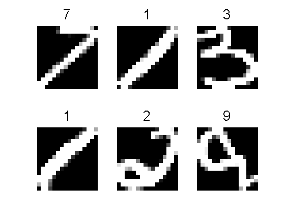

<!DOCTYPE html PUBLIC "-//W3C//DTD XHTML 1.0 Transitional//EN" "http://www.w3.org/TR/xhtml1/DTD/xhtml1-transitional.dtd">
<html xmlns="http://www.w3.org/1999/xhtml">
<head>
<meta http-equiv="Content-Type" content="text/html; charset=windows-1252" />
<meta name="author" content="Nikhil Khandelwal" />
<meta name="description" content="Personal webpage of Nikhil Khandelwal" />
<meta name="keywords" content="student,mit,website,graduate,adrian dalca" />

<title>Nikhil Khandelwal's personal website</title>
<!DOCTYPE html>
<html>
<head>
<meta charset="UTF-8">
<title>Insert title here</title>
</head>
<body>

</body>
</html>
<link rel="stylesheet" type="text/css" href="./style.css" />
<!--[if IE]>
<link rel="stylesheet" type="text/css" href="./css/style-ie.css" />
<![endif]-->
</head>
<body>

<div id="main_container">

    <!--  MAIN  NAVIGATION--> 
    <div id="main_navigation" class="main-menu ">
        <ul>  <li><a href="./contact.html">Contacts</a></li>
        <li><a href="./projects.html">Projects</a> </li> 
            <li><a href="./index.html" title="Home">Home</a></li> 
            
           
        </ul> 
    </div>
    
<div class="page_content">
  
  
<div id="header_container">
    <div id="headshot">
        
    </div>
    
    <div id="main_info_container">
     
        <h1 style="width:250px;">Nikhil Khandelwal</h1>
                         
         <div style="position: absolute; float: right; right:20px;">
         
         </div>
                 
        <div class="pages_post_descr">
        
            <div class="pages_post_descr_main">
            
            
           Master's Student, 
            
              <br />
              <a href="http://www.cse.buffalo.edu/">Computer Science and Engineering</a><a href="http://www.buffalo.edu/" target="_blank">
              <br />
              University of Buffalo</a><br />
              <br />
              <strong>Contact</strong>:<br />
              121 Heath St, Buffalo, 14214.&nbsp;<br />
            nikhilkh at buffalo dot edu<br />
            <br />
            <a href="./Resume.pdf">Resume</a> | <a href="https://www.linkedin.com/pub/nikhil-khandelwal/45/b8b/76/">Linkedin</a>
            </div>
        </div>    	
    </div>
</div>
  
 
            
            
            
            <p>I am a graduate student at UB in the CSE department. I am interested in Distributed Systems, Machine Learning and Application Developement . I have a side passion for developing android apps. </p>
            <p>I have proven ability to learn challenging concepts quickly and have developed competencies in diverse areas. I easily adapt to change and welcome the opportunity of a new environment.

Prior to Joining this university, I was working with Accenture Pvt. Ltd. as an Software Engineer. I did my Bachelor's in Enginering(IT) from Sinhgad College of Engineering, India.</p>


  

<a href="#curriculum"><h1>Curriculum Vitae </h1></a>
<p>
Sections: <a href="#education">Education</a>, <a href="#coursework">Coursework</a>, <a href="#skills">Skills</a>, <a href="#work">Work Experience</a>, 
Or <a href="./Resume.pdf" title="Nikhil Khandelwal's CV">see PDF</a> verison.</p>

<a name="education"></a>
<h2>Education</h2>
<p><strong>University of Buffalo, The State University of New York <br />
</strong>  Department of Computer Science and Engineering
</p>
<ul>
  <li>Master's student, currently G.P.A : 3.8/4.0<br />
  </li>
</ul>
<p><strong>University of Pune, India <br />
  </strong>Department of Information Technology
</p>
<ul>
  <li>Bachelor of Technology, 2011.<br />
  </li>
</ul>
<a name="coursework"></a>
<h2>Coursework</h2>
<p><strong>Analysis of Algorithms, Information Retrieval, Distributed Systems, Data Intensive Computing, Machine Learning, Operating Systems</strong> <br />
</p>

<a name="skills"></a>
<h2>Skills</h2>
<p><strong>Keywords: </strong> Object-Oriented Programming, Java, Android, Apache Lucene, Apache Solr, TIBCO, Apache Hadoop 
</p><br />
<p><strong>Languages: </strong> Java, C, JavaScript, Python
</p><br />
<p><strong>Framework and Tools: </strong>Spring MVC, Ruby on Rails, TIBCO Active Matrix, Android, MapReduces
</p>

<a name="work"></a>
<h2>Work Experience</h2>
<p><strong>Accenture Services , Bangalore, India <br />
</strong> Software Engineer, July 2011 - July 2013 <br />Trained as a developer in Core Java and J2EE technologies, and TIBCO Active Matrix. Worked on a project which maintains the 

complete CRM application for a telecom company. I developed software for the business layer using TIBCO BW tool suite.</p>

<div class="inside_h2">Projects</div>
<ul>
  <li><p><strong>Accenture Free Pool Management System</strong></p>
  <p>Using this system, employees could track mark attendance, apply for vacation. Managers could generate lists of employees 

on free pool, approve vacations requests. Developed the attendance and vacation tracking module for the software </p></li>

  <li><p><strong>Middleware module for Mobile Number Portability (MNP)</strong></p>
  <p> Developed the system to synchronously complete a MNP request at multiple end systems with a 100% accuracy.
  Part of my responsibility was to  develop the module
   which handles the request within the middle ware. I also helped design the HTTP request protocols of an outgoing or incoming MNP requests.  </p></li>

  <li><p><strong>Streamline error handling of the current CRM application for a telecom company </strong></p>
  <p> Every day the CRM processed over a hundred thousand requests, out of which thousands of HTTP requests (per day) would time out in the CRM due to bottle neck in the billing systems. Developed a

flow for such request, to get stored in a buffer, before being automatically submitted when the end systems were available. This work was previous done manually and hence my tool was a very 
efficient solution. </p></li>
</ul>
<a name="projects"></a>
<h2>Projects</h2>
<p>Click <a href="./projects.html">here</a> to see a complete list of projects</p>
<a name="involvement"></a>
<h2>Involvement</h2>
<ul>
  <li>Won the <strong>Accenture Celebrates Excellence</strong> award for displaying extra ordinary efficiency at work.  2013 </li>
  <li><strong>First prize </strong>for the senior year major project. 2011 </li>
  <li> Worked for the college social club, <strong> Khsitij </strong>and organised many donation drives for multiple social causes.  2007-11 </li>
  <li> <strong>General Secretary</strong> of the student body in college. 2010 </li>
  <li><strong> Vice President</strong> of The English Club(150+ students). 2009 </li>
</ul>

<!--
<a href="http://goo.gl/SFfNQ" target="_blank">Google scholar link</a>.
-->


 <!-- <h2>Recent Main Projects</h2>
<div class="archive_post"> 
  <h4>Handwritten Digits Classification<a href="#"></a></h4>
  <p>In this assignment, the task was to implement different classification methods and compare its performance
in classifying handwritten digits. The main parts of the projects were: </p>

<ul style="margin-left:100px">
  <li>Classifed the data set using Neural Network works and use Feed Forward, Back Propagation to implement Neural Network
  </li>
  <li>Classifed the same data set using k-Nearest Neighbor (kNN) approach </li>
   <li>Evaluated the advantages and disadvantages of above classification methods and documented the results. </li>
</ul>
</div>
  
  
  
<div class="archive_post">
  <h4>Simplified Amazon Dynamo (Replicated Key-Value Storage)</h4>
  <p>Implemented a Amazon Dynamo-style key-value storage. The three main functionality implemented were 1) Partitioning, 2) Replication, and 3) Failure handling in a Distributed system
The main goal is to provide both availability and linearizability at the same time.</p>

<ul style="margin-left:97px">
<li>Designed and implemented a simplified version of Amazon Dynamo. Implemented Quorum replication with replication degree 3 and versioned all objects to differentiate between stale copies.</li>
  <li>  Handled node failures and ensured that when any node recovers/rejoins it should be updated with most recent copies</li>
</ul>
</div>

<div class="archive_post">
  <h4>Twiiter data analysis using Hadoop MapReduce</h4>
  <p>In order to aggregate interesting data and also to keep up with the “trends” we will aggregate data from Twitter. We will collect Twitter data for different ranges 

of dates (week-range, month-range). Aggregated raw data needs to be cleansed to some extend before analyzing it using R and Hadoop MapReduces</p>

<ul style="margin-left:97px">

<li>Designed and implemented the MR work flows to extract various information from the real time data of Twitter (approx
1GB). For instance: simple word count, # tag counts, @ counts etc.</li>
<li> For the most popular hash tag, we develop a connected network of tweeter-follower. Then we implemented the parallel breadth first search algorithm using Hadoop MapReduce to find the shortest path between users in the network</li>
<li>We clustered the tweeters by the number of followers they have,into three groups, low, medium and high respectively. This clustering was performed using Kmeans Clustering algorithm, implemented using hadoop MapReduce.</li>
</ul>
</div> -->


<div class="blue_divider"></div> 

<div style="width:300px; text-align:right; margin-left:20px;">
  <p>Design : <a href="http://adalca.mit.edu./">Adrian Dalca</a></p>
  
</div>
</div><!--end of main_container--> 

<div style="height:1px;"></div>

<script type="text/javascript">

  var _gaq = _gaq || [];
  _gaq.push(['_setAccount', 'UA-477540-7']);
  _gaq.push(['_trackPageview']);

  (function() {
    var ga = document.createElement('script'); ga.type = 'text/javascript'; ga.async = true;
    ga.src = ('https:' == document.location.protocol ? 'https://ssl' : 'http://www') + '.google-analytics.com/ga.js';
    var s = document.getElementsByTagName('script')[0]; s.parentNode.insertBefore(ga, s);
  })();

</script>
</body>
</html>
